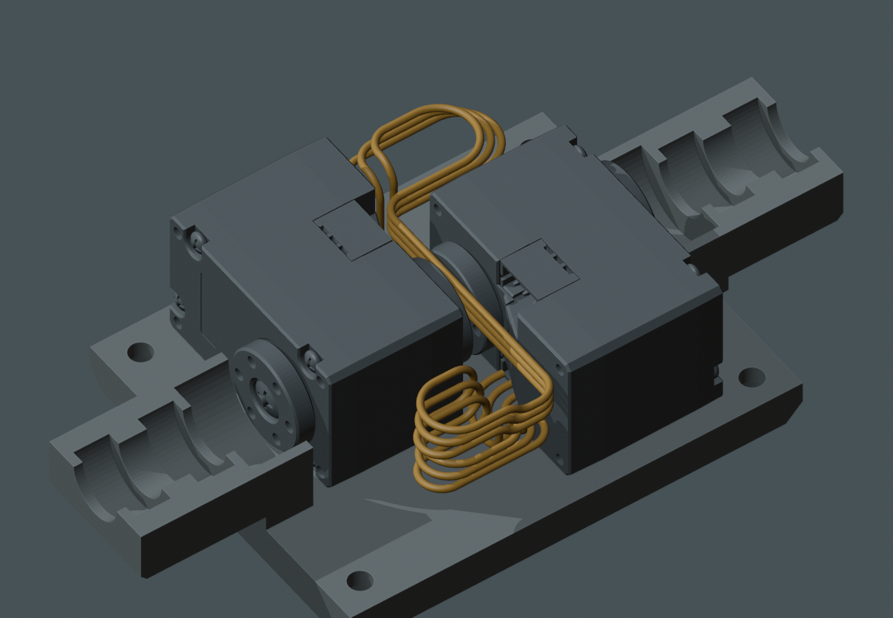
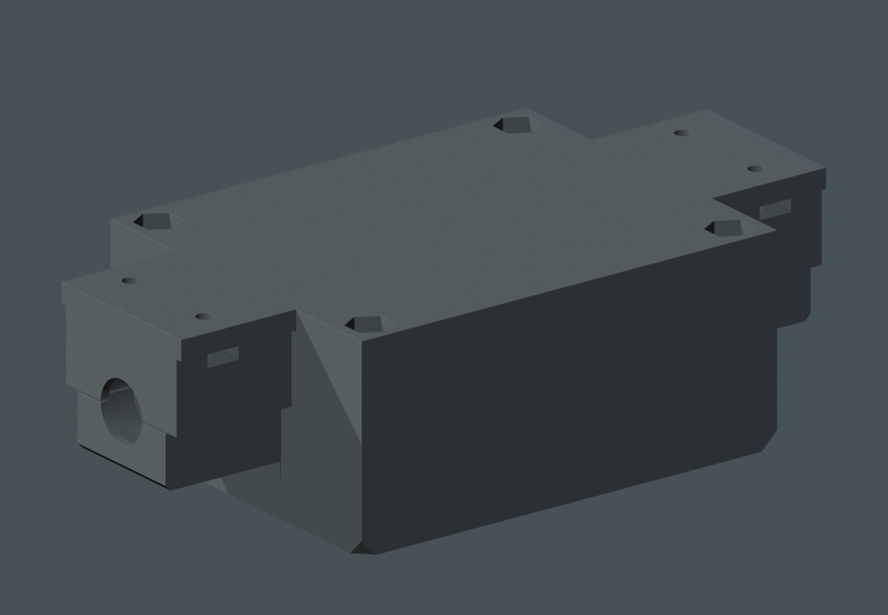
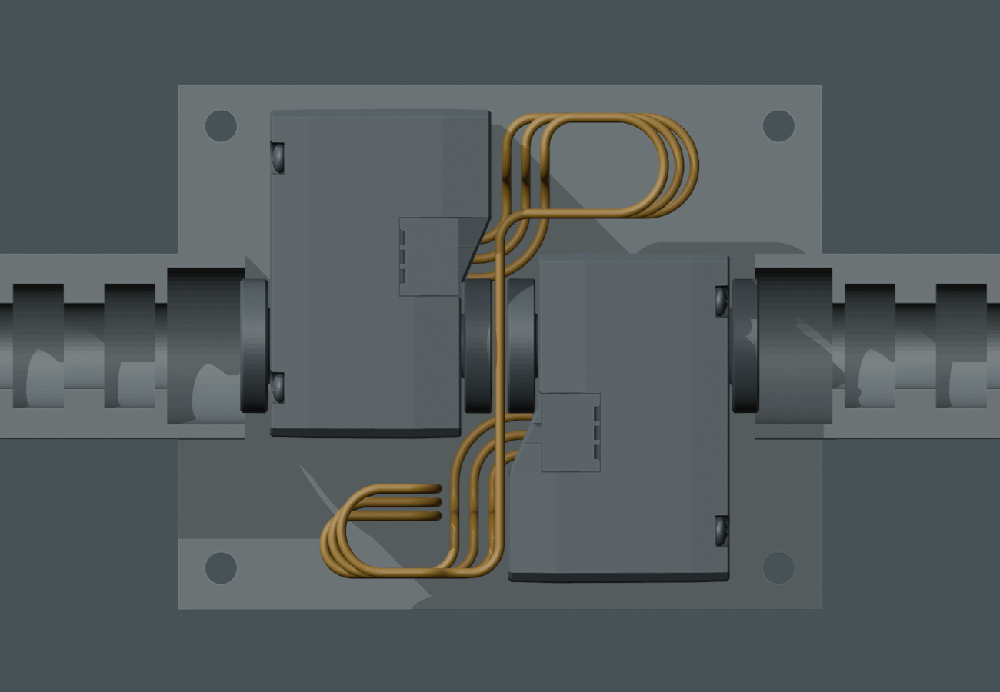

两台轮舵机的串接线可以收在里面
独立名义路线 · 原上梁和底盖保持完整 · 主模型尚未同步
三芯各保留 190 mm，利用前后对角空腔回绕、分层通过中缝。
这根串接线无需在上梁开出线槽，也不新增零件或螺钉。这里是打印电机座的内部；线路主体避开整个电机外包框，没有利用舵机齿轮腔。





名义检查已完成
| 项目 | 结果与实际限制 |
|---|---|
| 内部空间 | 18 组名义组合无实体相交。所选路线与原厂电机最小约 0.3 mm、打印上座约 0.6 mm、线间约 0.4 mm；所选路线增粗到半径 0.6 / 0.7 mm也无相交。以上是离散网格结果。 |
| 合盖与装入 | 先在台面装好电机、底盖和 U04，原上座从上方落下的 101 个位置通过；四螺钉各 69 个位置、前后壳各 275 个位置未碰 U04。人手保持余线、真实插头和防夹未验证。 |
| 主控进来的线 | 另用左侧电机上口，9 个试值短段与内部 U04 不相交。该短段仍穿过原封闭上梁，出口和完整主控线路尚未完成。对 U04 不开槽，不等于所有进出线都无需开口。 |
| 真实线材 | 190 mm 和约 1 mm 来自用户报告；插头外伸、端子直尾、最小弯曲半径及三芯是否粘连仍未确定。三条路径采用独立软线假设，实际要按随货线调整，不能作裁线／制造放行。 |
| 结构与文件 | 打印件、固定孔和舵机位姿均未改。26 个主模型、STL、电子细模、视频保护文件保持原散列。原厂电机和内线仅在本局部模型中；完整主模型仍为 M1.58。 |
局部内部收纳模型 （原研究引用，未收录于本快照） · 静态实体检查 · 装入检查 · 进线短段共存检查 · 实际命令和日志
PROTOTYPE / UNVALIDATED。完整线束、余线固定和实物防夹仍未闭合；未更新视频，未向硬件对话发送指令。